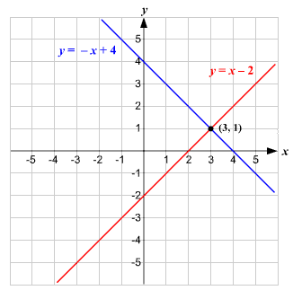
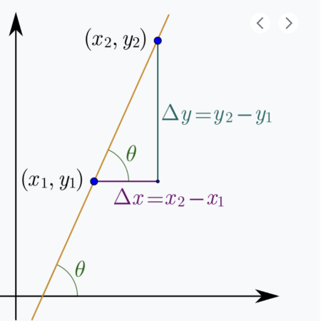
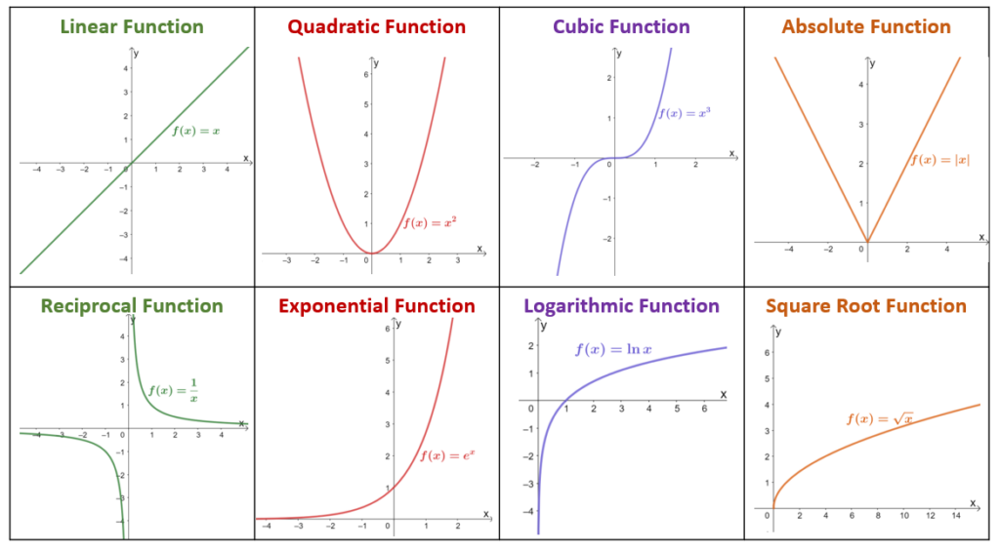
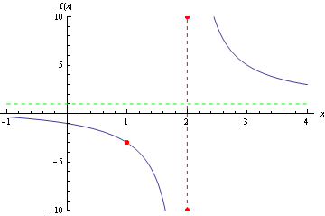

Essential Algebra
Module 1 (Section 0: Essentials)
This module will provide the foundations of algebra, that are essential for the remainder of the modules. We start with key algebra concepts needed for more advanced concepts. Then, we introduce functions and limits, which are the building blocks of calculus, game theory, and statistics
Prerequisites: High-School/GCSE level Algebra
Chapter 1: Algebra Fundamentals
1.1: Equations and Inequalities
To solve an equation with 1 variable, we look to isolate the variable on one side. We do this by:
Adding/subtracting to both sides of the equation
Multiplying/Dividing the equation on both sides by the same value
Example:
Take the following equation: \(\frac{x+3}{4} = 6\)
- Multiply both sides by 4: \(4 \left( \frac{x+3}{4} \right) = 6 \times 4\)
- Now we have: \(x+3 = 24\)
- Then, subtract 3 from both sides: \(x+3-3 = 24-3\)
- Thus, we get: \(x = 21\)
For inequalities, we do the same, with one change:
If we multiply both sides by a negative number, we flip the direction of the inequality sign
Ex. \(-x < 1\), we multiply both sides by -1, and we get \(x>-1\) with the sign flipped
1.2: System of Equations
To solve a system of equations (often 2 different equations), we do the following:
- With one of the equations, solve for one of the variables
- Subsitute that into the other equation - this will make it an equation with one variable
- Solve that equation for the remaining variable
- Then, plug the variable we have found, into either one of the equations, and find the value of the other variable
There are other ways to do this, such as elimination, but we will not worry about that for now.
System of equations can also be thought of graphically. The solution to a system of equations is the point \((x, y)\) where the two equations meet. In the figure below, the system of \(y=-x+4\) and \(y=x-2\) meet at \((x=3, y=1)\), which is the solution of the equation.

Example:
Solve the following system of 2 equations:
\[ 3x+2y = 13, \space x-2y = 3 \]
- First, let us solve one of the equations for one of the variables.
- Let us choose the second equation: \(x-2y = 3\)
- Solve for \(x\): \(x=2y+3\)
- Now, plug the solution of \(x\) into the other equation
- The other equation is \(3x+2y=13\)
- Plug in the \(x\) we found: \(3(2y+3) + 2y = 13\)
- Now, solve that equation for the remaining variable
- The equation is \(3(2y+3)+2y = 13\)
- Expand the equation: \(6y + 9 + 2y = 13\)
- Combine like terms: \(8y + 9 = 13\)
- Isolate \(y\): \(8y = 4\)
- Thus, \(y = 1/2\)
- Now, plug \(y\) back into either equation to find \(x\)
- Let us use the equation: \(x - 2y = 3\)
- Plug in \(y\): \(x - 2(1/2) = 3\)
- Simplify: \(x - 1 = 3\)
- Solve for \(x\): \(x = 4\)
Thus, our solution is \((x = 4, y = 1/2)\)
1.3: Linear Equations and Slope
Linear equations take the form of \(y= mx+b\)
Where \(m\) is the slope - the slope is the amount \(y\) changes by for every increase in 1 of \(x\)
Where \(b\) is the y-intercept - the y-intercept is the value of \(y\) when \(x=0\) (or what value of \(y\) is when the line touches the \(y\) axis)
Let us dig deeper into the slope. We know the slope is the amount \(y\) changes for every increase of 1 in \(x\)
- So, in other words, it is the change in \(y\) over the change in \(x\): slope = \(\Delta y / \Delta x\)
We can calculate the slope between two points \((x_1, y_1)\) and \((x_2, y_2)\)
- Slope is \(\Delta y / \Delta x = \frac{y_2 - y_1}{x_2 - x_1}\)
The reason slope is so important, is that it shows us the relationship between \(x\) and \(y\)
- This will become very key to us when we look at regression methods
For example, take a look at the slope of the graph below - change in \(y\) over change in \(x\)

Let us say you have two points \((x_1, y_1)\) and \((x_2, y_2)\). How would we get the linear equation of \(y=mx+b\)?
- First, we can start by solving for the slope \(m\), which as shown above, is \(m=\frac{y_2 - y_1}{x_2 - x_1}\)
Then, we can choose one point, and use point slope form, which takes the following form:
\[ y - y_1 = m(x-x_1) \]
Then, we can isolate \(y\), and multiply out \(m(x-x_1)\) to put it in the form of \(y=mx+b\)
Point Slope Example:
Let us take the two points, \((4,7), (5,1)\). Find the equation of the line in the form in \(y=mx+b\)
First, let us find the slope: \(m=\frac{y_2 - y_1}{x_2 - x_1} = \frac{(1)-(7)}{(5)-(4)} = \frac{-6}{1} = -6\)
Now, let us use point \((4,7)\) in point slope form \(y - y_1 = m(x-x_1)\)
We get the equation \(y-(7) = (-6)(x-4)\)
Expand out the right side: \(y-7 = -6x + 24\)
Isolate \(y\) to get \(y=mx+b\) form: \(y=-6x + 31\)
1.4: Factoring and Difference of Squares
Factorisation is the process of changing an equation in the form of \(ax^2+bx+c\), into the form of \((x+d)(x+e)\)
How do we do this?
We need to find 2 numbers, \(d\) and \(e\), that sum to \(b\), and multiply to \(c\)
Then, once we have found the 2 numbers \(d\) and \(e\), input them into the form above
Factoring Example:
Let us factor \(x^2+5x+6\)
We need to find two numbers, that add to 5, and multiply to get 6
How do we do this? Well, think of all the possible numbers that can multiply to get 6
These can include {1,6}, {2,3}, {-1,-6}, {-2,-3} (remember to consider negatives!)
Now, which one of these adds to 5?
Of course, {2,3} add to 5
Now we know the two numbers are 2 and 3, let us put it in the factor format \((x+d)(x+e)\)
Thus, the factored answer is \((x+2)(x+3)\)
There is a special case of factoring: difference of squares
Essentially, any expression that takes the form of \(a^2 - b^2\), can be rewritten as \((a+b)(a-b)\)
- For example, the expression \(x^2 - 9\) can be rewritten as \((x+3)(x-3)\)
1.5: Multiplication Expansion
We can check our factorisation by expanding out \((x+2)(x+3)\)
How do we multiply these two?
- Multiply the 1st element of the 1st group by the 1st element of the 2nd group: \(x \times x\)
- Multiply the 1st element of the 1st group by the 2nd element of the 2nd group: \(x \times 3\)
- Multiply the 2nd element of the 1st group by the 1st element of the 2nd group: \(x \times 2\)
- Multiply the 2nd element of the 1st group by the 2nd element of the 2nd group: \(2 \times 3\)
Basically - multiply each element of each group by all the other elements in the other group
Thus, the expansion is equal to:
\[ (x \times x) + (x \times 3) + (2 \times x) + (2 \times 3) \]
\[ = x^2 + 3x + 2x + 6 \]
\[ =x^2 + 5x + 6 \]
And see that we have gotten the same answer as the original equation before factoring!
We can also use multiplication expansion to prove the difference of squares we explored in the previous section:
DIfference of squares says that \(x^2-9\) can be rewritten as \((x+3)(x-3)\)
Is this true? We can prove this by expanding \((x+3)(x-3)\), and see if it equals \(x^2 - 9\)
We do the same process of expansion as above:
\(=(x \times x) + (x \times -3) + (3 \times x) + (3 \times -3)\)
\(= x^2 -3x + 3x -9\)
\(= x^2 - 9\), so indeed, difference of squares does work
1.6: Exponents
There are a few key properties of exponents that you need to keep in mind:
Product of exponents with same base: \(a^x \times a^y = a^{x + y}\)
Negative exponents: \(a^{-x} = \frac{1}{a^x}\)
Division of exponents with same base: \(a^x / a^y = a^{x-y}\)
Exponent to an exponent: \((a^x)^y = a^{xy}\)
Power of 0 is equal to 1: \(a^0 = 1\)
Power of a product: \((a \times b)^n = a^n \times b^n\)
Power of a quotient: \((a/b)^n = a^n / b^n\)
Sometimes, you will have an equation that takes the form of \(x^n = a\). To solve \(x\), the solution is as follows:
\(x = a^{(1/n)}\)
How do we know this?
- Start with \(x^n = a\). How can we get rid of the \(n\) and isolate \(x\)?
- We know that \(n \times \frac{1}{n} = 1\). But how do we multiply that when \(n\) is in the exponent?
- Well, we have the property that \((a^x)^y = a^{xy}\). Thus, we know that \((x^n)^{(1/n)} = x^1 = x\)
- But, if we take one side to the power of \(1/n\), we must take the other side to the same power. Thus, we have the equation \((x^n)^{(1/n)} = a^{(1/n)}\)
- Simplify, and we get \(x = a^{(1/n)}\)
Example:
Solve for \(x\) in the equation \(x^{0.7} = 5\)
- We know the solution of an equation in the form of \(x^n = a\) will be \(x = a^{(1/n)}\)
- So, let us identify \(n\) and \(a\). We know \(n = 0.7\) and \(a=5\) in the original equation
- Thus, the answer will be \(x = 5^{(1/0.7)} = 5^{1.4828}\)
1.7: Logarithms
Logarithms can be thought of the inverse for exponential functions. The relationship between the two are as follows:
\[ y = \log_a (x) \rightarrow a^y = x \]
Or in more intuitive terms: \(y=log_2(8)\) is basically asking, what power \(y\) should I take \(2\) to, in order to get a result of \(8\)
- The answer, of course, is \(3\)
Logarithms have the following properties:
- Product within logs: \(\log(xy) = \log(x) + \log(y)\)
- Power within logs: \(\log(x^y) = y \times log(x)\)
- Negative logs: \(- \log(x) = \log(1/x)\)
- Division within logs: \(\log(x/y) = \log(x) - \log(y)\)
- Log of 1 is 0: \(\log(1) = \log(e^0) = 0\)
We can also change the base of logarithms with the following formula:
\[ \log_b (x) = \frac{ \log_a (x) }{ \log_a (b)} \]
Chapter 2: Sum & Product Notation
2.1: Summation Notation
Summation Notation is a way of expressing the sums of many values, and is commonly used in statistical techniques.
Summation notation is defined as the following:
\[ \sum\limits_{i=1}^n x_i = x_1 + x_2 + x_3 + ... + x_n \]
\(i=1\) indicates that we start summing at the index \(i=1\). Sometimes, you will see \(i=0\), and rarely, \(i\) will be something else
\(n\) is the value of the index at which we stop summing. This is often the sample size
\(x_i\) is the value of set \(X\) with index \(i\). For example, if \(i=1\), \(x_i = x_1\) will be the 1st element in the set of \(X\)
- For example, if you have a dataset with 100 observations ( \(n = 100\) ), you will have 100 elements within the set \(X\), with \(x_1\) being the 1st element, \(x_2\) being the 2nd element, and \(x_i\) being the \(i\)th element
Summation Notation has the following properties:
- Common factor within summation can be taken out: \(\sum cx_i = c \sum x_i\)
- Sum within summation: \(\sum (x_i + y_i) = \sum x_i + \sum y_i\)
- Summation of a constant: \(\sum\limits_{i=1}^n c = n \times c\)
2.2: Product Notation
Product notation is a short-hand way of expressing the products of many values, commonly used in Maximum Likelihood Estimation (MLE)
Product Notation is defined as the following:
\[ \prod\limits_{i=1}^n x_i = x_1 \times x_2 \times x_3 \times ... \times x_n \]
\(i=1\) indicates that we start multiplying at the index \(i=1\). Sometimes, you will see \(i=0\), and rarely, \(i\) will be something else
\(n\) is the value of the index at which we stop multiplying. This is often the sample size
\(x_i\) is the value of set \(X\) with index \(i\). For example, if \(i=1\), \(x_i = x_1\) will be the 1st element in the set of \(X\)
- For example, if you have a dataset with 100 observations ( \(n = 100\) ), you will have 100 elements within the set \(X\), with \(x_1\) being the 1st element, \(x_2\) being the 2nd element, and \(x_i\) being the \(i\)th element
Product Notation has the following properties:
- Constant within product notation: \(\prod c x_i = c^n \prod x_i\)
- Product of a constant: \(\prod\limits_{i=1}^n c = c^n\)
2.3 Converting Between Sum and Product
We can transition between summation notation and product notation with logarithms and their properties:
\[ \log \left( \prod\limits_{i=1}^n x_i \right) = \log(x_1 \times x_2 \times ... \times x_n) \]
\[ = \log(x_1) + \log(x_2) + ... + \log(x_n) \]
\[ = \sum\limits_{i=1}^n \log(x_i) \]
We can also add a constant \(c\) for a more general rule:
\[ \log \left( \prod\limits_{i=1}^n cx_i \right) = \log(cx_1 \times cx_2 \times ... \times cx_n) \]
\[ = \log(c^n \times x_1 \times x_2 \times ... \times x_n) \]
\[ = \log(c^n) + \log(x_1) + \log(x_2) + ... + \log(x_n) \]
\[ =n \log(c) + \sum\limits_{i=1}^n \log(x_i) \]
Chapter 3: Functions
3.1 Dimensionality
\(R^1\) is a one dimensional line - it is the set of all real numbers \(R\) between \(-∞\) and \(∞\)
- In other words, it is just a normal number line
We can increase the number of dimensions to more than 1
\(R^2\) is a two dimensional plane: Dimension 1 is the set of all real numbers \(R\) between \(-∞\) and \(∞\), and dimension 2 is another set of all real numbers \(R\) between \(-∞\) and \(∞\)
- Think of a cartesian plane, where we graph lines in 2 dimensions, \(x\) and \(y\)
Simlarly, \(R^3\) is a 3 dimensional space
- Think of a 3D coordinate system with latitude, longitude, and height, 3 dimensions of \(x\), \(y\), and \(z\)
\(R^n\) is a \(n\)-dimensional space, where there are \(n\) different axes, each the set of all real numbers between \(-∞\) and \(∞\)
- This is referred to as the Euclidean Space
3.2 Definition of Functions
A function is a rule that takes an input of \(R^n\), and returns one, and only one number in \(R^1\)
- Basically, for any specific input value(s), there must be only one output value
For example, in the figure below, the first one is a function, while the other 2 are not - this is because the other 2 have multiple output \(y\) values for a single \(x\) input, which violates the definition of a function:

A function can have one variable input \(R^1\), and an output of \(R^1\)
For example, \(f(x) = x + 1\)
The function takes an input of some \(x\) in one dimension \(R^1\), and outputs a real number in \(R^1\)
A function can have two variable input \(R^2\), and an output of \(R^1\)
For example, \(f(x,y) = x^2 + y^2\)
This function takes inputs of both \(x\) and \(y\), a two dimensional space \(R^2\), and outputs a real number in \(R^1\)
In political science, we commonly use \(X\) to represent the input variable(s), and \(Y\) to represent the output variable
- If we have more than one dimension of input \(R^n\) where \(n > 1\), then we put subscripts on the \(X\) to indicate additional input variables - \(X_1, X_2, X_3...\)
Key features of a function include:
The domain: The set of numbers in \(X\) at which \(f(x)\) is defined (produces a valid output)
The range: The set of elements \(Y\) assigned by \(f(x)\) to elements of \(X\)
- This is sometimes called the image, if the input of the function has more than 1 dimension
3.3: Types of Functions
Here are a few common types of functions that are commonly seen in Political Science applications:
Monomials: functions in the form of \(f(x) = ax^k\)
Polynomials: sums of multiply polynomials
For example, \(f(x) = ax^2 + bx + c\)
The “degree” of a polynomial is the \(x^n\) term with the highest \(n\)
Linear functions are polynomials with degree 1, Quadratics are degree 2, Cubics are degree 3
Rational functions: the ratio of two polynomials
Exponential functions: when \(x\) is in the exponent
- For example, \(f(x) = 2^x\)
Trigonometric functions: \(f(x) = \cos(x), f(x) = \sin(x)\), etc.
- These are relatively uncommon in political science
For example, the figure below contains a few common types of functions and their graphs:

Another type of function is composite functions:
Composite functions are when the output of one function, is used as the input of another
Basically, one function nested in another
Composite functions are defined as the following:
\[ f \circ g = f[g(x)] \]
For example, if \(h(x) = x^2\), and \(f(x) = x-5\), then \(f \circ h = (x)^2 - 5\)
3.4: Zeroes and Roots
The zeroes/roots of functions, are the values of the input of the function, where the output of the function equals 0
- Essentially, what \(x\) values get you the output \(f(x) = 0\)
To solve for Zeroes/Roots, simply set the function equal to 0, and solve for \(x\)
- Note: Some functions can have multiple roots (especially polynomials), so make sure to check you have gotten all the roots
For example, find the root of \(f(x) = x - 5\)
Set the function equal to 0: \(0 = x - 5\)
Solve for \(x\): \(x = 5\)
For quadratic functions (polynomials with a degree of 2), roots can be found in 2 different ways.
First, you can use factorisation: if a polynomial is factorisable, you can solve for the roots easily.
See section 2.3 Factorisation and Difference of Squares for information on how to do this
For example, find the roots of \(f(x)=x^2+5x+6\)
Set equation equal to 0: \(0 = x^2+5x+6\)
Factor: \(0 = (x+2)(x+3)\)
Now, find what \(x\) values will get the equation to equal 0. This is quite easy - since \(0 \times\) anything is \(0\), we just need to either make \((x+2)=0\) and \((x+3) = 0\)
Thus, our roots are \(x = -2, x= -3\)
Second, you can use the quadratic formula for un-factorisable equations. Given a quadratic in the form of \(ax^2 + bx + c\), the roots are:
\[ x = \frac{ -b ± \sqrt{b^2 - 4ac} }{2a} \]
Note: the quadratic formula frequently returns 2 real zeroes/roots, but this is always not the case. Make sure to check both the \(+\) and \(-\) in the numerator
Note: sometimes, the quadratic formula returns imaginary roots - we will not worry about this as it has minimal applications in political science
Chapter 4: Limits and Continuity
4.1 Definition of Limits
A limit is when a function approaches some specific output \(y\) value \(L\), as the input \(x\) moves closer towards some value \(c\)
Often, \(L\) is either \(L=0\) or \(L = ± ∞\)
Approaching, basically means that as the \(x\) value becomes infinitely closer towards \(c\), the \(y\) value approaches \(L\)
Limits are notated as follows:
\[ \lim\limits_{x \rightarrow c} f(x) = L \]
For example, the figure below is a function with a limit.

For a limit to exist, it must approach the same \(y\) value \(L\), from both sides of \(x=c\). The figure above shows an example of this
For example, if from the left and right side as \(x\) approaches \(c\), \(y\) approaches \(∞\), we have a limit
Howevrer, if from the left side as \(x\) approaches \(c\), \(y\) approaches \(∞\), while from the right side as \(x\) approaches \(c\), \(y\) approaches \(-∞\), we do not have a limit, since they approach different values
Importantly, \(f(x)\) does not need to be defined at point \(x=c\) for the limit to exist. It just needs to approach the same value from both sides of \(x=c\) until it gets infinitely close to \(x=c\)
If a limit does not exist because the function approaches a different \(L\) from either side of \(x=c\), we can still notate a one-sided-limit as follows:
From the right side only: \(\lim\limits_{x^+ \rightarrow c} f(x) = L\)
From the left side only: \(\lim\limits_{x^- \rightarrow c} f(x) = L\)
For example, in the figure below, the left and right side do not approach the same value at \(x=2\), but we can notate one-sided limits for each side:

Limits can take several different properties - which allow us to play with them algebraically:
Let us assume that \(f\) and \(g\) are functions, with \(\lim\limits_{x \rightarrow c} f(x) = A\), and \(\lim\limits_{x \rightarrow c} g(x) = B\). The following properties are thus true:
- \(\lim\limits_{x \rightarrow c} [f(x) + g(x)] = \lim\limits_{x \rightarrow c} f(x) + \lim\limits_{x \rightarrow c} g(x)\)
- \(\lim\limits_{x \rightarrow c} c f(x) = c \lim\limits_{x \rightarrow c} f(x)\)
- \(\lim\limits_{x \rightarrow c} f(x) \times g(x) = [\lim\limits_{x \rightarrow c} f(x)] \times [\lim\limits_{x \rightarrow c} g(x)]\)
- \(\lim\limits_{x \rightarrow c}[f(x)/g(x)] = [\lim\limits_{x \rightarrow c} f(x)] / [\lim\limits_{x \rightarrow c} g(x)]\)
4.2: Continuity
Continuity is quite intuitive - if a function has no breaks or jumps within a certain interval, then it is continuous in that interval.
However, we can give a more formal definition using limits
Suppose that function \(f\) has an interval containing point \(c\). \(f\) is continuous at point \(c\), if these 2 criteria are both met:
- \(\lim\limits_{x \rightarrow c} f(x)\) exists
- \(\lim\limits_{x \rightarrow c} f(x) = f(c)\)
Why is this the definition of limits?
- If the first criteria is met, we know that the function is approaching the same \(y\) value, when it gets closer to \(x=c\) on both sides.
- This makes sense, as if a function didn’t approach the same value on both sides of a point, then there would be a jump, and thus, it would not be continuous
- If the second criteria is met, we know that the function at \(x=c\) is defined, and is the same as the limit
- This makes sense - a function has to be defined at \(c\) to be continuous at \(c\), or else, there would be some kind of gap
- This also makes sense, as if the value at \(c\) was different than the value it was approaching at \(c\), then there would be some kind of jump, and the function would not be continuous
For example, take the function below at point \(a\). The 1st criteria is met, as the left and right hand side approaches the same point. However, the 2nd criteria is not met, since \(f(x)\) is not defined at the point \(a\), thus \(\lim\limits_{x \rightarrow c} f(x) ≠ f(a)\)
Continuity has a few properties:
- If function \(f\) and \(g\) are both continuous at \(c\), then the following is true:
- \(f(x) + g(x)\) is continuous at \(c\)
- \(f(x) - g(x)\) is continuous at \(c\)
- \(f(x) \times g(x)\) is continuous at \(c\)
- \(|f(x)|\) is continuous at \(c\)
- \(\alpha f(x)\) is continuous at \(c\), where \(\alpha\) is a constant
- If the function \(f\) and \(g\) are both continuous at \(x=c\), then \(f(x)/g(x)\) is continuous at \(x=c\), given that \(g(c) ≠ 0\)
- If \(f\) is continuous in interval \([a, b]\), then \(f\) has a maximum and minimum value within \([a,b]\)